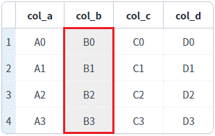
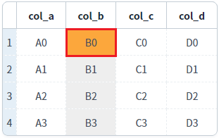
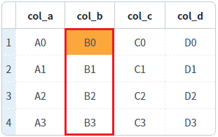
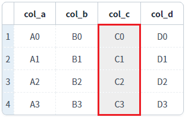
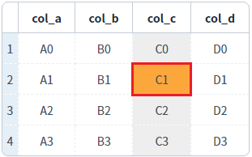
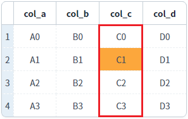
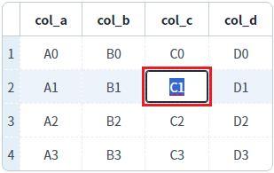

[GridView] readOnly(읽기 전용)를 스크립트로 설정하기 - 컬럼(열) 단위
1개요
GridView의 'setColumnReadOnly' 메소드와 'setReadOnly' 메소드를 사용하여 GridView 바디 컬럼을 'readOnly'(읽기 전용)로 설정하거나 해제하는 예제입니다. 'readOnly'가 'true'로 설정되면 셀이 수정 모드로 변경되지 않습니다.
다음은 예제에서 사용한 메소드와 설명입니다.
setColumnReadOnly( colIndex , readOnly ) : 컬럼 단위로 'readOnly'를 설정합니다.
setReadOnly( type , rowIndex , colIndex , readOnlyFlag ) : 첫 번째 인자 'type'을 통해 단위 별(셀, 컬럼, 로우, GridView 전체)로 'readOnly'를 설정할 수 있습니다.
GridView의 다른 메소드를 통해 GridView 전체, 로우(Row), 셀(Cell) 단위로도 설정할 수 있습니다.
다음은 GridView의 'readOnly' 설정 관련 메소드 목록입니다.
- setCellReadOnly( rowIndex , colIndex , readOnly ) : 셀 단위 설정
- setColumnReadOnly( colIndex , readOnly ) : 컬럼 단위 설정
- setColumnReadOnly( readOnly ) : GridView 전체 설정
- setReadOnly( type , rowIndex , colIndex , readOnlyFlag ) : 첫 번째 인자 'type'을 통해 셀, 컬럼, 로우, GridView 전체를 설정
- setRowReadOnly( rowIndex , readOnly ) : 로우 단위 설정
2구현된 기능
'setColumnReadOnly' 메소드를 사용하여 바디 컬럼에 'readOnly' 설정하기
'setReadOnly' 메소드를 사용하여 바디 컬럼에 'readOnly' 설정하기
3예제 테스트 방법
3.1'setColumnReadOnly' 메소드를 사용하여 바디 컬럼에 'readOnly' 설정하기
1
STEP 1: 초기 상태를 확인합니다.
모든 셀이 수정 가능하며 각 셀을 클릭하면 수정 모드로 변경됩니다. 'readOnly'가 설정된 셀의 배경색은 회색(#eee)으로 설정되어 있습니다. 각 컬럼의 헤더에는 바디 컬럼의 ID가 표시됩니다.
Image 1.브라우저(Chrome) 실행 예시

2
STEP 2: 'col_b' 컬럼에 'readOnly'를 설정합니다.
"'col_b' 컬럼에 'readOnly' 설정하기 - setColumnReadOnly 메소드 사용" 버튼을 클릭합니다.3
STEP 3: 실행된 결과를 확인합니다.
'col_b' 컬럼에 'readOnly'가 설정되며 셀의 배경색은 회색(#eee)으로 변경됩니다.
Image 2.브라우저(Chrome) 실행 예시 - GridVeiw

4
STEP 4: 셀을 클릭합니다.
'col_b' 컬럼의 첫 번째 로우의 셀을 클릭합니다.
5
STEP 5: 실행된 결과를 확인합니다.
선택된 셀의 배경색은 변경되지만 수정 모드로 변경되지 않습니다.
Image 3.브라우저(Chrome) 실행 예시 - GridVeiw

6
STEP 6: 'col_b' 컬럼에 'readOnly'를 해제합니다.
"'col_b' 컬럼에 'readOnly' 해제하기 - setColumnReadOnly 메소드 사용" 버튼을 클릭합니다.7
STEP 7: 실행된 결과를 확인합니다.
'col_b' 컬럼에 'readOnly'가 해제되며 셀의 배경색은 흰색(#fff)으로 변경됩니다. (기존에 선택된 셀의 배경색은 유지됩니다)
Image 4.브라우저(Chrome) 실행 예시 - GridVeiw

8
STEP 8: 셀을 클릭합니다.
'col_b' 컬럼의 첫 번째 로우의 셀을 클릭합니다.
9
STEP 9: 실행된 결과를 확인합니다.
셀이 수정 모드로 변경됩니다.
Image 5.브라우저(Chrome) 실행 예시 - GridVeiw

3.2'setReadOnly' 메소드를 사용하여 바디 컬럼에 'readOnly' 설정하기
1
STEP 1: 초기 상태를 확인합니다.
모든 셀이 수정 가능하며 각 셀을 클릭하면 수정 모드로 변경됩니다. 'readOnly'가 설정된 셀의 배경색은 회색(#eee)으로 설정되어 있습니다. 각 컬럼의 헤더에는 바디 컬럼의 ID가 표시됩니다.
Image 6.브라우저(Chrome) 실행 예시
2
STEP 2: 'col_c' 컬럼에 'readOnly'를 설정합니다.
"'col_c' 컬럼에 'readOnly' 설정하기 - setReadOnly 메소드 사용" 버튼을 클릭합니다.3
STEP 3: 실행된 결과를 확인합니다.
'col_c' 컬럼에 'readOnly'가 설정되며 셀의 배경색은 회색(#eee)으로 변경됩니다.
Image 7.브라우저(Chrome) 실행 예시 - GridVeiw

4
STEP 4: 셀을 클릭합니다.
'col_c' 컬럼의 두 번째 로우의 셀을 클릭합니다.
5
STEP 5: 실행된 결과를 확인합니다.
선택된 셀의 배경색은 변경되지만 수정 모드로 변경되지 않습니다.
Image 8.브라우저(Chrome) 실행 예시 - GridVeiw

6
STEP 6: 'col_c' 컬럼에 'readOnly'를 해제합니다.
"'col_c' 컬럼에 'readOnly' 해제하기 - setReadOnly 메소드 사용" 버튼을 클릭합니다.7
STEP 7: 실행된 결과를 확인합니다.
'col_c' 컬럼에 'readOnly'가 해제되며 셀의 배경색은 흰색(#fff)으로 변경됩니다. (기존에 선택된 셀의 배경색은 유지됩니다)
Image 9.브라우저(Chrome) 실행 예시 - GridVeiw

8
STEP 8: 셀을 클릭합니다.
'col_c' 컬럼의 두 번째 로우의 셀을 클릭합니다.
9
STEP 9: 실행된 결과를 확인합니다.
셀이 수정 모드로 변경됩니다.
Image 10.브라우저(Chrome) 실행 예시 - GridVeiw

4구현 예시
4.1'setColumnReadOnly' 메소드를 사용하여 컬럼에 'readOnly' 설정하기
GridView의 'setColumnReadOnly' 메소드를 사용하여 스크립트를 작성합니다. 세부 설정은 아래의 스크립트 예시에 작성되어 있습니다.
Example 1.Script - readOnly 설정하기
//예제 파일에서는 스크립트 scwin.btn_exam1_1_onclick에 작성되어 있습니다. // GridView 'grd_exam1'의 'col_b' 컬럼에 'readOnly'를 설정합니다. grd_exam1.setColumnReadOnly("col_b", true);
Example 2.Script - readOnly 해제하기
//예제 파일에서는 스크립트 scwin.btn_exam1_2_onclick에 작성되어 있습니다. // GridView 'grd_exam1'의 'col_b' 컬럼에 'readOnly'를 해제합니다. grd_exam1.setColumnReadOnly("col_b", false);
4.2'setReadOnly' 메소드를 사용하여 컬럼에 'readOnly' 설정하기
GridView의 'setReadOnly' 메소드를 사용하여 스크립트를 작성합니다. 세부 설정은 아래의 스크립트 예시에 작성되어 있습니다.
Example 3.Script - readOnly 설정하기
//예제 파일에서는 스크립트 scwin.btn_exam2_1_onclick에 작성되어 있습니다. // GridView 'grd_exam1'의 'col_c' 컬럼에 'readOnly'를 설정합니다. grd_exam1.setReadOnly("column", "col_c", true);
Example 4.Script - readOnly 해제하기
//예제 파일에서는 스크립트 scwin.btn_exam2_2_onclick에 작성되어 있습니다. // GridView 'grd_exam1'의 'col_c' 컬럼에 'readOnly'를 해제합니다. grd_exam1.setReadOnly("column", "col_c", false);
5주요 API
setColumnReadOnly( colIndex , readOnly )
setReadOnly( type , rowIndex , colIndex , readOnlyFlag )